Reproduced in-text 2, working on Figures 2 + 3. Total time used: 20h 28m (51.2%).
09.18-09.25: Going back to the app
Although the figures in the app don’t match up to the figures in the paper, I wanted to check to see if I could get any more similar results via the app.
Could put in all the parameters, except number of simulations was limited to 10 (rather than 30) but crashes at that number, so run at their default. However, the outputs don’t really contain anything usable (e.g. just know most had short wait time, and know median occupancy ratio was around 20%). However, it did make me think that’s it’s worth trying the models with the default parameters from the code (rather than the paper), just to see if that happens to look any more similar.
09.26-09.32, 09.38-9.40, 10.09-10.12: Running the model with default parameters from the code
Ran baseline model with default parameters from the code (rather than fixing to meet paper).
Interesting differences, for example, are that it is 1 simulation (nsim=1) but run time 10,000 days (run_t=10000) which works out to about 27 years (which is not far off running 30 simulations each of 1 year).
However, can see this is absolutely wrong! Which is not surprising, but still good we checked.
Figure 2A with parameters from code
09.42-10.00 (in middle of the above): Discussion with Tom
Showed Tom the progress and he shared from additional suggestions of things to look into:
Check calculated inter-arrival times match paper
Check distributions are the same
Check length of resources (we realised not mentioned in paper - e.g. timeout for appointment)
Also, reminded that the use of simEd and seed streams is not about getting the same results from the same model with the same parameters, but about controlling change when you change parameters (i.e. so the only thing that changes is that parameter, and not the sampling). However, in this case, set.seed() is sufficient.
My additional reflections of things to try from this are to:
Vary length of resources
Try not limiting to just ED patients
Double-check if INR procedures only have one room option (whilst IR have two rooms)
Look at parameters used in the diagram on CLOUDES
Agreed to explore these and anything else can think of, but if then still stuck, at that point to email the authors (once have tried the final figures - resource utilisation and supplementary).
Felt could then move into evaluation against guidelines - in protocol, had mentioned waiting until after fully wrapped with the model, with rationale that it impacts on code timings, but on reflection, you could argue likewise for influence on timings of that evaluation if you waited before proceeding to it (e.g. waiting for response) and had then had a gap from working on that model and were no longer as familiar.
10.31-10.36: Check the inter-arrival times
# Set in reproduction.qmded_pt =107700inr_pt =104eir_pt =468ir_pt =3805# Set in model.Rst_pt =750ais_pt =450ecr_pt =58# Calculate inter-arrival times (as from model.R)year2min =525600I_ED =round(year2min / ed_pt)I_ST =round(year2min / st_pt)I_AIS =round(year2min / ais_pt)I_ECR =round(year2min / ecr_pt)I_INR =round(year2min / inr_pt)I_EIR =round(year2min / eir_pt)I_IR =round(year2min / ir_pt)# View calculated inter-arrival timesprint([I_ED, I_ST, I_AIS, I_ECR, I_INR, I_EIR, I_IR])
[5, 701, 1168, 9062, 5054, 1123, 138]
These match up with the times from the paper, as in the image below from Huang et al. (2019).
Table 1
10.51-12.02, 12.12-12.15: Check distributions and length of resources
As a reminder, this is the set-up of the model, with Figure 1 from Huang et al. (2019). There are several resources, including single plane (angioIR) and biplane (angioINR) angiography suites.
Figure 1
Emergency arrival (potential stroke) patients:
Start as emergency arrival (new_patient_traj)
Become either a stroke patient (stroke_traj) or non-stroke patient (nonstroke_traj)
The stroke patients will then become either AIS (acute ischaemic stroke) (ais_traj) or non-AIS (timeout then leave)
The AIS patients will then become either ECR (endovascular clot retrieval) (ecr_traj) or TPA (tissue plasminogen activator) only (timeout then leave)
Other patients (pathways included as they share resources with stroke pathway):
Time with ed_staff: timeout(function() rnorm(1, 20,10)) (sample 1 from normal distribution with mean 20 and sd 10)
Probability of stroke: sample(1:2, 1, prob = c(PROB_STROKE, (1-PROB_STROKE) )
Where PROB_STROKE = st_pt / ed_pt, which is 750/107700=0.006963788 (so probability 0.007, or 0.7%)
Interestingly, the inter-arrival time calculated for stroke (I_ST = round(year2min/st_pt)) is not used, and instead, the arrival of stroke patients is based on this probability sampling
Non-stroke patients (nonstroke_traj):
Probability of discharge vs ct review: sample(1:2, 1, prob = c(.9, .1)) so 0.9 or 90% leave, and then 10% get CT review before leave
Discharge: timeout(1)
CT review: timeout(20)
Stroke patients (stroke_traj):
Time with stroke doctor: timeout(function() rnorm(1, 30, 10))
CT time: timeout(function() rnorm(1, 20,10))
Probability of AIS: sample(1:2, 1, prob = c(PROB_AIS, (1-PROB_AIS)))
Probability of ECR: sample(1:2, 1, prob = c(PROB_ECR, (1-PROB_ECR))
Where PROB_ECR = ecr_pt / ais_pt = 58/450 = 0.1288889 (probability 0.13, or 13%)
TPA only: timeout(1)
ECR patients:
AngioINR time (uses angio_inr, inr, and 3 angio_staff): timeout(function() rnorm(1, 120,60))
Paper
“The stroke pathway begins with a new patient in the Emergency Department (ED) and ends with the patient “seizing” an angioINR, an INR and angio staff which represents nurses and technologists. The patient must proceed through a sequence of events chronologically as follows: triage in ED, assessment by the stroke team, CT imaging, assessment for ECR eligibility and lastly, acquiring ECR resources (Figure 1). The decision to proceed to the next event is probabilistic and is acquired from logged data from a Comprehensive Stroke Service in Melbourne, Australia, between 2016 and 17 (Table 1).”Huang et al. (2019)
As it stands, Table 1 just contains the number of resources and patients - but, from this paragraph, it appears it might previously have included some of these probabilities.
I had a look online to see if I could find any pre-prints. I came across a poster abstract, but otherwise nothing that could help elucidate this. I also looked for the data from the Comprehensive Stroke Service (although I couldn’t easily come across anything with patient counts, and wasn’t certain this information would definitely be public, so limited search).
I looked the the model on CLOUDES, and this had different parameters (although this might just be illustrative). But, for example:
ED arrivals - poisson with IAT 10 and 2 entities per arrival- similar to model (poisson with IAT 5 and 1 entity per arrival)
ED triage - normal mean 15 stdev 5 - differs from model (mean 20 sd 10)
Probability stroke 0.7 (and 99.3 leave) - same as model
Time with stroke doctor normal mean 30 sd 10 - same as model
CT normal mean 20 sd 10 - same as model
AIS probability 15 (and 85 leave) and then LVO probability 60 (and 40 leave) (which is described as probabilitiy true AIS) - differs from model (simply, from those who received the CT, 60% AIS and 40% exit)
ECR probabiltiy 15 (and 85 leave) - differs from model (13% ECR)
AngioINR normal mean 120 sd 60 - same as model
However, several of them are the same, so it seems it would be worth running the model with those parameters.
Non-emergency IR arrivals - poisson IAT 120 1 entity - differs from model (138)
Emergency IR arrivals - poisson IAT 1120 1 entity - differs from model (1123)
Non-emergency INR arrivals - poisson IAT 5040 1 entity - differs from model (5040)
Time with angio staff: normal mean 20 sd 10 - same as model
Routing to rooms: non-emergency IR check for angio room for IR (which chooses between IR and INR based on shortest queue), non-emergency go into INR queue, doesn’t have route for emergency IR - differs from model but looks like this is due to limitation of software in only letting you choose one patient type or all patients
Angio INR time - normal mean 120 sd 60 - differs from model (mean 60 sd 30) but this again might be limitation of software (only allowing one time length regardless of patient type)
Angio IR time - normal mean 60 sd 30 - same as model
Reflections from this
Some of these differences appear to be rounding/simplifying numbers, or limitations of the CLOUDES software. However, some are more different. My logic here is that the model code we have is for the app and some parameters differed to the paper - so I’m anticipating it’s possible that some of these other parameters may have differed too (but cannot confirm due to them not being reported in the paper). However, if there’s a chance that the CLOUDES model was based on the paper parameters (rather than app), there’s a chance it could help us match up? This seems unlikely though (given it accompanies the app).
However, the only one of real interest I think (that is not simplification or limitation) is the difference in ED triage time.
13.00-13.15: Varying ED triage length
I modified the model.R so I could easily change the ED triage mean and SD, then ran a scenario where these were 15 and 5. However, that didn’t make much difference.
Figure 2A with ED triage from CLOUDES
13.16-13.28: Double check category being presented
I’m pretty sure I’m presenting the right category (ED), but I looked at presenting wait times from patients in any category, or in each of the other categories.
I temporarily removed the filtering from run_model() and then ran:
This supports that ED is the correct choice (the only other similar is EIR but logically, it does still make sense to be ED, and it doesn’t happen to be that EIR is a great match either, just similar).
Figure 2A categories
13.39-13.43: Double-check INR room options
Looks right compared with paper, can’t spot any issues
13.44-14.10, 14.15-14.45: Vary length of resources to try to engineer results
I can see what looks wrong in each of the figures and so, one option, is to see if I could easily attempt to engineer the results by varying the parameters slightly, to see what might make it look similar.
Looking at Figure 2A as an example:
I have lower AngioINR queue density and no visible angio staff queues (should be queues)
Could try increasing the number of patients accessing the angioINR
There are INR queues (when should be none)
Could try either having ED patients not use INR, or having more INR availability
CT, ED staff and stroke doctor queues are similar
I ran a few quick models (3 replications), just to see what comes out.
run_model(nsim=3, seed = SEED, ed_pt = 107700*2)
Doubled the number of emergency department arrivals. This increased angio INR queue but moved CT and ED staff away from desired. Interestingly, no impact on angio staff.
Double ED
run_model(nsim=3, seed = SEED, angio_staff = 3)
Reduce number of angio staff to 3 during day, which had large impact on angioINR and INR queues, but still no visible angio staff queue.

Halve angio daytime staff
Double ED AND less staff:
Double ED AND less staff
Looking at model.R, these results are coming from the simpy resource itself, so this shouldn’t be due to any issues with the calculation of angio staff resource use.
Some extra suggestions from quick chat with Tom:
Increase length of AngioINR appointment
Look at the utilisation (e.g. angio staff utilisation)
However, if I just plot angio_staff (without the group by resource), I can see it! It just doesn’t appear in the other plot. I then realised that this is because the angio_staff and INR lines completely overlap. If we remove INR from the plot, it starts to look a bit more similar.
Hence, it seems that actually the main difference to the paper is just the angioINR queue.
16.03-16.19: Looking into Figure 2C and 3C, and getting in-text result 2!
Figure 2C has double the machines but, in the paper, they have no change in angio staff levels, whilst I find that increases. That makes sense - with plenty of machines, the bottleneck is now on having the staff for those machines.
I realised then, from reading back on the paper, that I should have replaced an angioIR machine with an angioINR machine (and not just add an extra angioINR machine).
“Second, in the “two angioINRs” scenario, the angioIR is replaced with an angioINR, doubling angiography availability for ECR patients.” Huang et al. (2019)
I changed this in reproduction.qmd (angio_inr=2, angio_ir=0) and re-ran the models for Figure 2 and 3. This fixed the (C) part of those figures to be more similar to the paper.
This then resolved in-text result 3, with a 4.3 minute reduction in the queue length (which is very similar to “4 min less”). Hence, can consider that reproduced at this point!
Time spent today: 218m, or 3h 38m
Total used to date: 1193m, or 19h 53m
Time remaining: 1207m, or 20h 7m
Used 49.7% of 40 hours max
16.25-17.00: Trying to raise the angioINR queues
Tried changing length of angio appointments for all non-ED patients to the same as ED patients - definitely not right!
Longer angio
Shorterning the ED angio appointments to the non-ED length is also not helpful.
Shorter ED angio
Then I ran through a bunch of different seeds, to see if that also could explain it. Some do come a little closer than others… though this was only five replications. Should probably repeat this exercise, but with 30 replications!
Different seeds
plot_list <- list()
i <- 0
for (s in seq(0, 800, 50)) {
i <- i + 1
baseline <- run_model(nsim=5, seed = s)
plot_list[[i]] <- create_plot(baseline, group="resource", title="")
}
ggarrange(plotlist=plot_list, common.legend=TRUE, legend="bottom")
ggsave("../logbook/posts/2024_07_10/fig2a_5rep_diffseeds.png", width=20, height=20)
Time spent today: 253m, or 4h 13m
Total used to date: 1228m, or 20h 28m
Time remaining: 1172m, or 19h 32m
Used 51.2% of 40 hours max
References
Huang, Shiwei, Julian Maingard, Hong Kuan Kok, Christen D. Barras, Vincent Thijs, Ronil V. Chandra, Duncan Mark Brooks, and Hamed Asadi. 2019. “Optimizing Resources for EndovascularClotRetrieval for AcuteIschemicStroke, a DiscreteEventSimulation.”Frontiers in Neurology 10 (June). https://doi.org/10.3389/fneur.2019.00653.